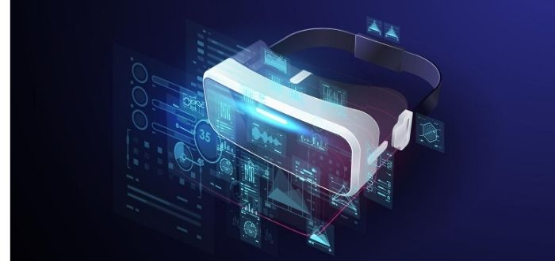

Noviembre 13, 2023
La realidad virtual (RV) es una tecnología que utiliza software y hardware para crear una experiencia simulada y multidimensional. A través de dispositivos como gafas de realidad virtual, auriculares y controladores, los usuarios pueden sumergirse en un entorno digital tridimensional que simula la realidad. La idea central de la realidad virtual es transportar al usuario a un espacio generado por computadora que puede ser completamente ficticio o una representación digital de un entorno real.
En la realidad virtual, se busca proporcionar una experiencia sensorial completa, incluyendo la vista, el oído y, en algunos casos, el tacto. Los entornos virtuales suelen ser interactivos, lo que significa que los usuarios pueden explorar y manipular el entorno como lo harían en el mundo real. Esto se logra mediante el seguimiento de los movimientos y acciones del usuario, permitiéndole interactuar con el entorno virtual de manera natural.
La tecnología detrás de la realidad virtual incluye sensores de movimiento, pantallas de alta resolución, sistemas de seguimiento y software avanzado de simulación. Los dispositivos de realidad virtual pueden variar desde sistemas completos que requieren conexión a una computadora potente hasta dispositivos más simples y autónomos que incorporan todo lo necesario para la experiencia virtual.
La realidad virtual se utiliza en una amplia variedad de campos, desde entretenimiento y videojuegos hasta aplicaciones más serias como la formación, la medicina y la arquitectura. La promesa de la realidad virtual radica en su capacidad para crear experiencias inmersivas y realistas, rompiendo las barreras físicas y permitiendo a los usuarios explorar mundos virtuales de una manera que antes solo era posible en la imaginación.

Hardware:
Gafas o Cascos de RV: Dispositivos que se colocan en la cabeza del usuario para proporcionar una pantalla visual que cubre todo el campo de visión.
Controladores: Dispositivos de entrada que permiten al usuario interactuar con el entorno virtual.
Software:
Entornos Virtuales: Aplicaciones y programas que crean el mundo virtual.
Motor de Juegos o Plataformas de Desarrollo: Herramientas que facilitan la creación de contenido de realidad virtual.
